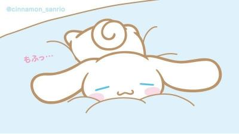

Cinnamoroll
Pompompurin
Pochacco
Little Twin Stars
My Melody
Kuromi
Hello Kitty
Cinnamoroll

Facts
- Cinnamoroll is a white, chubby, male puppy with blue eyes, pink cheeks, and long ears
- His long ears can help him fly
- His tail is curly and resembles a cinnamon roll
- Cinnamoroll's birthday is March 6
- Cinnamoroll lives at Cafe Cinnamon
- Cinnamoroll likes dancing to his favorite pop idols, coffee, chocolate, and spicy foods.
- Cinnamoroll was first designed as a chubby rabbit
- Cinnamoroll's Japenese name is シナモロール (Shinamorōru)
Specialties and Stuff You Should Try At Sucre Town
When you go to Sucre Town you must go Café Cinnamon. This cafe is also where Cinnamoroll lives!
There are also some of his friends like Chiffon, Mocha, Espresso, Cappuccino, and Milk. While you
are there you must try the Flying Clouds Cinnamoroll Burger, the Hot and Rich Chocolate, and the
Cutie Cutie Special Cinnamoroll Blue Soda.